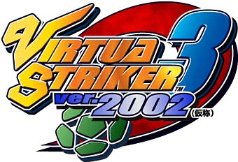
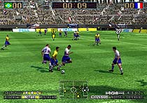
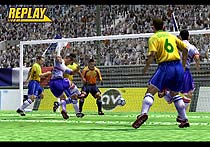

■
メーカー：セガ
■
ジャンル：スポーツ
■
発売予定日：2002年早春
■
メーカー希望小売価格：未定
■
プレイ人数：未定
ORIGINAL GAMES
SEGA
SEGA/AMUSEMENT VISION,LTD.,2001
adidas, the adidas logo and the Tango logo are registered trade marks of the adidas-Salomon group,
used with permission.
アーケードゲームとして全世界No.1、他の追随を許さない圧倒的人気を誇るサッカーゲーム「バーチャストライカー」シリーズ。そのシリーズ最新作「バーチャストライカー3 ver.2002（仮称）」がニンテンドーゲームキューブ用に登場します。
「バーチャストライカー」シリーズ最大のセールスポイントの１つがリアルな臨場感。今作でも走る、蹴る、ドリブルする、ターンするなどの選手の基本的なモーションを充実させ、実際のサッカー選手の自然な動きを忠実に再現しています。ボールを持っている選手はもちろん、それ以外の選手も、まるで自分の意志を持って動いているかのように、フィールド上を駆け巡ります。ひとつひとつのプレイにリアリティを追求し、環境演出にも実在の物を使用しているので、まるで本物のサッカー中継を見ているよう。サッカーの持つ醍醐味、臨場感を心行くまでお楽しみ頂けます。
今回のニンテンドーゲームキューブでは下記の点でパワーアップ！
★
大幅なボリュームUP
実際にプレイ可能な参加国は60ヶ国以上、選手名表示を備えて各チーム22名が登録、トータル1300名以上が登場し、スタジアムも10種類以上を用意。アーケード版を大きく上回るボリュームです。
★
じっくり腰を据えて楽しむ為の要素満載
試合中のメンバーチェンジを可能にし、各選手の選手名・背番号・スパイク等のエディット機能を備えることにより、プレイヤー好みのオリジナル編成のチームでゲームを楽しめます。
また、チームの個性を十分に生かせる様、フォーメーションと戦術を独立して選択することができるようになりました。
★
さまざまなバリエーションのゲーム形式
＊ インターナショナルカップモード
＊ トーナメントモード
＊ リーグモード
＊ ランキングモード
＊ VSマッチモード
また、更なる新要素の追加や、新要素を活かした、家庭用ならではの新たなゲームモードも予定しています。ぜひご期待ください！

